1984 - George Orwell
A classic, of course, but one I haven't read since school.

1Q84 - Murakami
Enjoyed the interweaving stories and the magical realism.

AI 2041 - Kai-Fu Lee & Chen Qiufan
I read this in 2022. It's definitely aging now (2026) better than AI-2027.

All Fours - Miranda July

All the Lovers in the Night - Mieko Kawakami
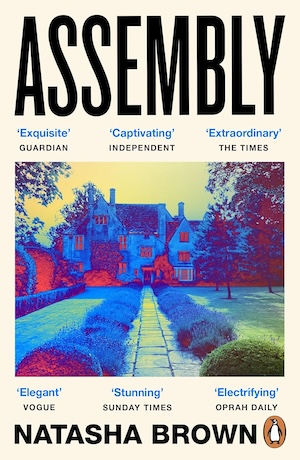
Assembly - Natasha Brown
Assembly - Natasha Brown

Audition - Ryu Murakami

Pattern Recognition - William Gibson
Spook Country - William Gibson
A lot of focus on brands, colours, design. Gibson apparently said his main interest is fashion, and he the novels are primarily a vessel for that.
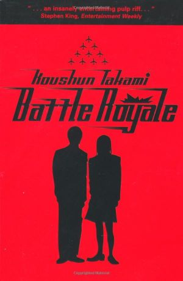
Battle Royale - Koushun Takami
Battle Royale - Koushun Takami

Beneath the Surface - Lindsay Buroker

The Big Sleep - Raymond Chandler
Black House - Stephen King & Peter Straub
 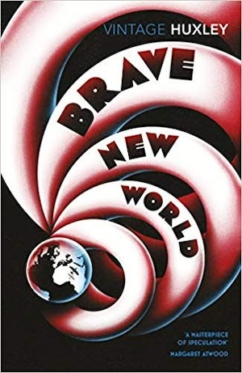
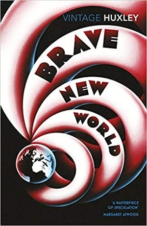


Dracula - Bram Stoker
It turns out what I thought was the story of Dracula was only really the first sliver of the book. A great story with compelling, heart-on-sleeve characters. Enjoyed reading it out loud and doing the voices.
Ship of Magic - Robin Hobb
A little less crisp than I remember from the Farseer trilogy, but I don't know if that's just whiplash from how poetic Stephen Donaldson is. I love Kennit so far, or rather the peeks we get into his inner monologue that show the gulf between his carefully manicured presentation and what a baby he is inside.
The Mad Ship - Robin Hobb
I've had enough time to get over "Where Fitz?" and am now fully invested in boat stories.


 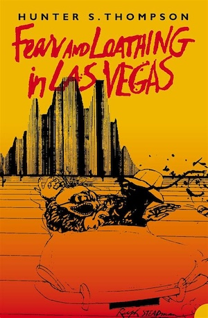
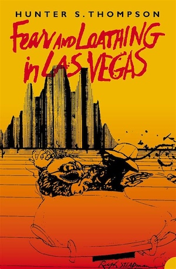


 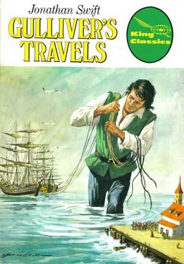
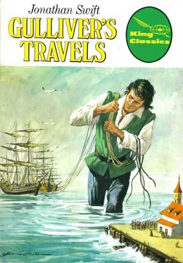

The Haunting of Hill House - Shirley Jackson
Incredible opening and doesn't get much worse from there.


 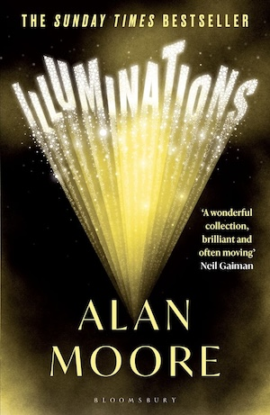
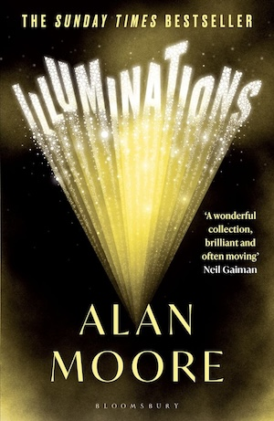


The King in Yellow - Robert W. Chambers
Started off eldritch horror, finished a bit Jeeves & Wooster.


Lord Foul's Bane - Stephen Donaldson
Donaldson manages to create a sympathetic protagonist out of a man who is not very nice most of the time. Very Lord of the Rings (complimentary). I'm looking forward to the rest of the series.


Mr Penumbra's 24 Hour Book Store - Robin Sloan
I spent most of the time kind of annoyed by the dorky protagonist, but it was a fun mystery adventure. One of the key takeaways is that being a Ruby programmer is an attractive trait, so... I'll take it.
Municipal Gothic - Ray Newman
Ghost stories in a traditional vein, taken out of a Victorian setting and told in council estates and neglected parts of the city. A fairly breezy read at 13 short stories. Enjoyed them a lot. Keen to read more of his work.
My Best Friend's Exorcism - Grady Hendrix
Pulpy, trashy, a lot of fun.

 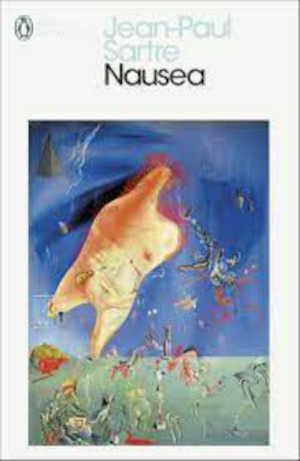
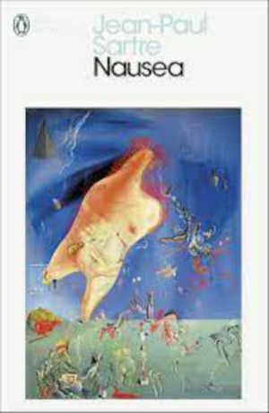


On the Calculation of Volume I - Solvej Balle
★★★

Out - Natsuo Kirino
★★★★
The best of Natsuo Kirino's crime novels, or at least the most exciting.


 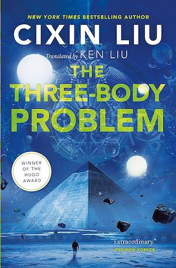
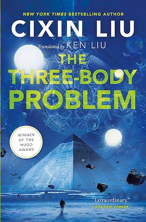


The Trial - Franz Kafka
I read this during a period during which I was taking care of some pretty gnarly life admin, which really enhanced the fever stress dream feeling of the book.


 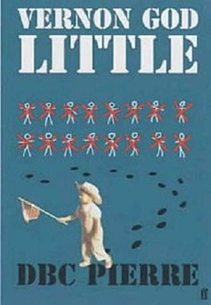
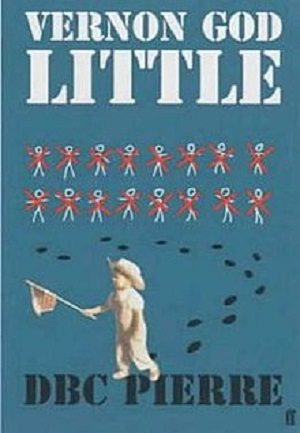


 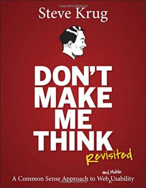
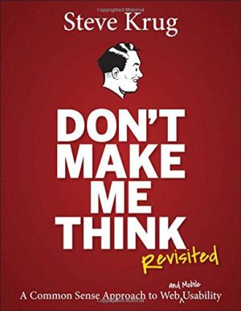

 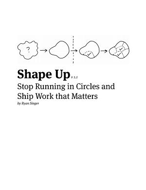
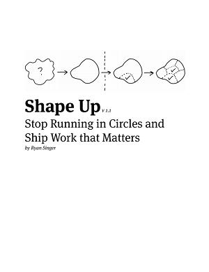


Against the Machine - Paul Kingsnorth
Extremely mixed feelings. Sharp in places, baffling in others. Just transphobic rambling at points. Nearly DNF'd.


The Anarchy - William Dalrymple
I knew almost nothing about the history of India going into this, and learned so much.


Careless People - Sarah Wynn-Williams
Just put it all in the bin, frankly. Facebook, I mean, not this book. The book can go on a shelf, probably. I greatly enjoy the Tech-dumpster-fire genre, and Careless People does not disappoint.
Cinema Speculation - Quentin Tarantino
An enjoyable trip through a particular era of US cinema, as told by someone who grew up glued to the screen. Tarantino took a (verbal) swing at Paul Dano not long after I finished reading this, so take any opinions with a heap of salt. I love Paul Dano.


Every Man For Himself and God Against All - Werner Herzog
Werner Herzog might be insane, or at least operating on a different tier of sanity than we’re used to.


Fahrenheit-182 - Mark Hoppus
I was (am) a big Blink fan, so it was cool getting the behind-the-scenes.


 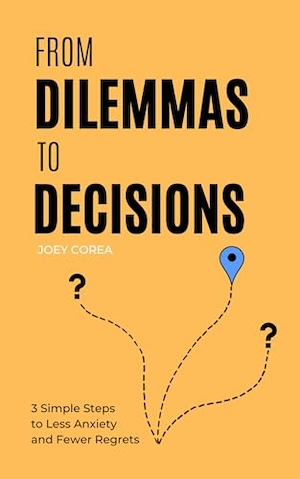
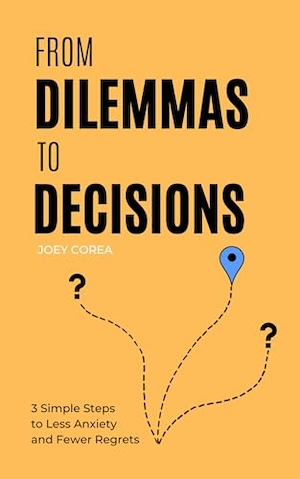


An Idler's Manual - Tom Hodgkinson
A light and entertaining read, as you might expect from the editor of the nation's premier magazine for loafers.


 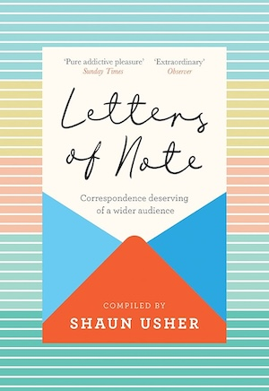
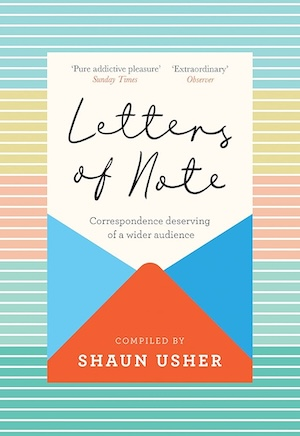

 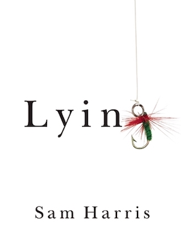
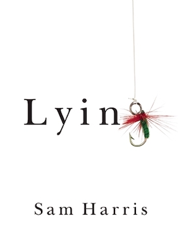


The Notebook: A History of Thinking on Paper - Roland Allen
I really enjoyed this read. Very interesting, very inspiring.

Notes to John - Joan Didion
A summary of Joan's meetings with her therapist, mainly regarding Quintana’s alcoholism, written as a series of letters to her husband John. Knowing how things would unfold (The Year of Magical Thinking, Blue Nights) made this a tough read.
 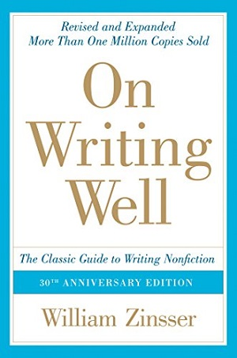
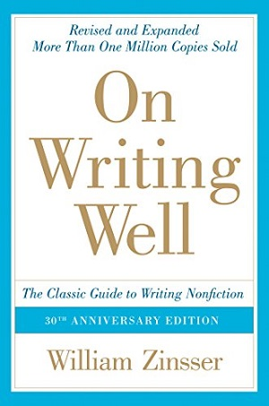


 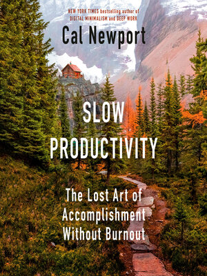
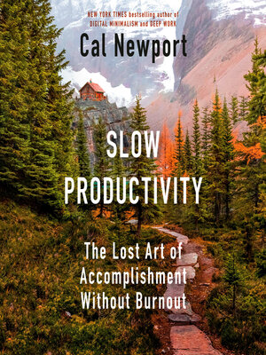


Things Become Other Things (RH ed.) - Craig Mod
A masterful expansion on the fine-art edition. Struggled with the B&W photos when reading in a dimly lit room.


Useful Not True - Derek Sivers
I previously read his book How To Live, and I enjoy Derek Sivers' brief, thought-provoking books. Both books are less about giving you answers and more about helping you ask good questions. https://sive.rs/u
The Wager - David Grann
A real page turner. It's got boats, it's got mutinies, it's got drama, it's got everything.


Walking the Great North Line - Robert Twigger
I love a walking memoir, and this is the second Robert Twigger book I've read since Angry White Pyjamas.

Wintering - Katherine May
Rest and retreat, in a year where I needed a lot of rest and retreat.


The Rubáiyát of Omar Khayyám
A great work of poetry as translated by Edward Fitzgerald. Turned onto this by a column in Idler.
Side Wounds - Lena Oleanderson
A book of poetry, mostly about their friend's suicide at 17 and their relationship with faith.


 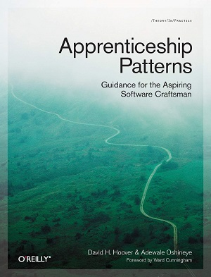
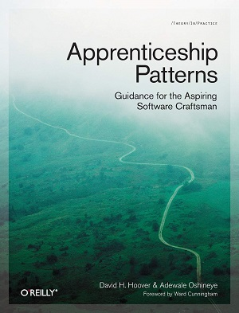


 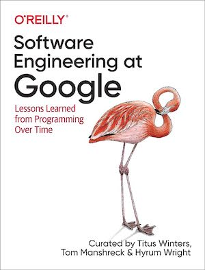
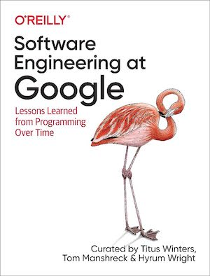